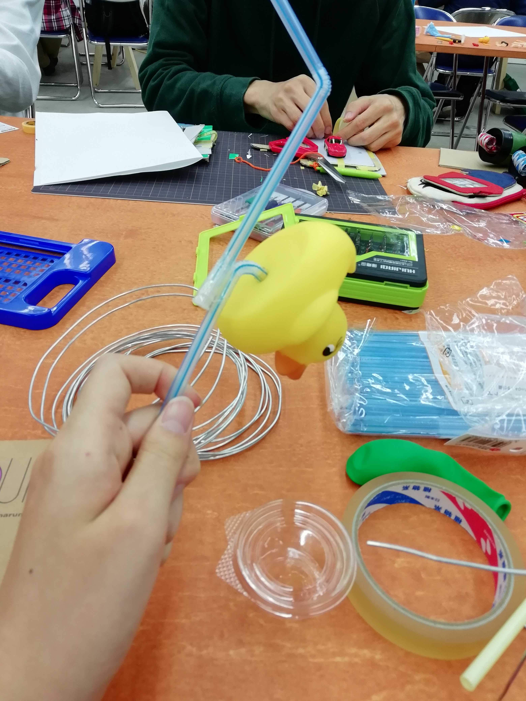
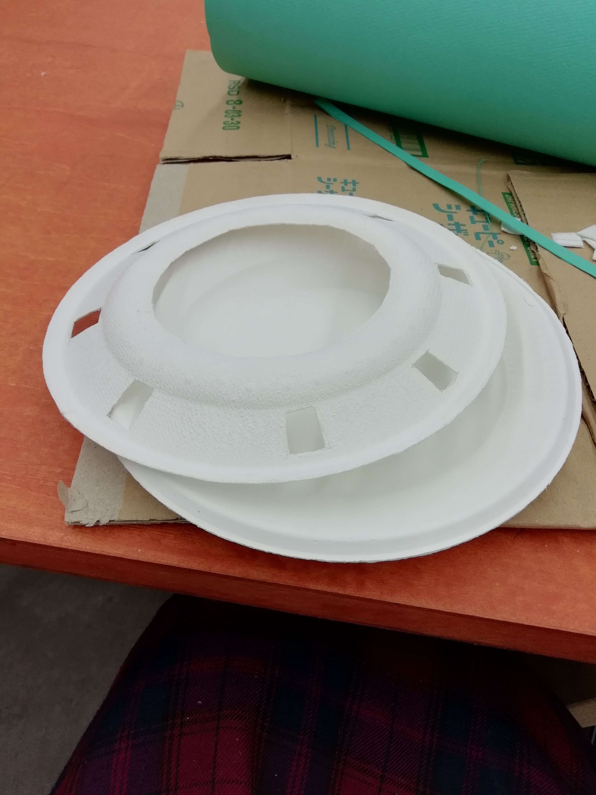

crosstech design report1.html.<!DOCTYPE html>
<html lang="en" dir="ltr">
  <head>
    <meta charset="utf-8">
    <title></title>
  </head>
  <body>

  </body>
</html>
<!DOCTYPE html>
<html lang="en" dir="ltr">
  <head>
    <meta charset="utf-8">
    <title>クロステックデザイン演習：個人のレポート１</title>
<h4>作った「役に立たないもの」</h4>
<p>１・水を飲もうとするとアヒルが鳴るストロー<br>
２・大きめの穴が空いているため、吹きこぼれの心配がない鍋蓋</p>



<br>
